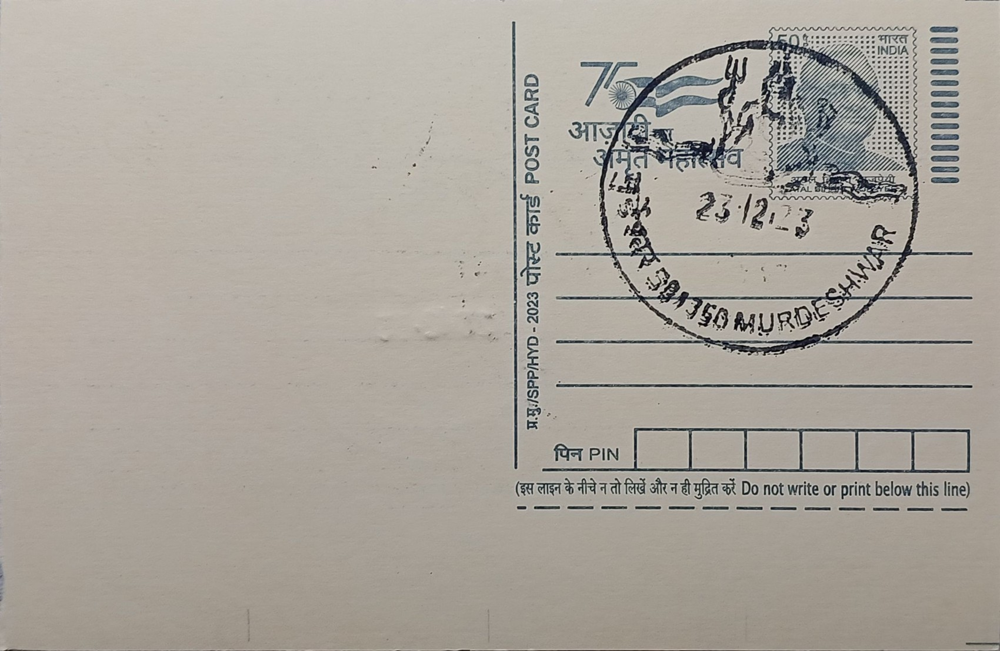

Lord Shiva
ಶಿವ


The Shiva worshipped at Murudeshwar is bound up with the Ramayana legend of the Atma Linga, the divine lingam that Ravana obtained from Shiva through penance as a token of invincibility. Warned that Lanka would become invulnerable if the linga reached it intact, the gods persuaded Ganesha to trick Ravana into setting it down at Gokarna, where it fixed itself to the earth. In fury, Ravana tore away the goat-skin cover (kanduka) wrapping the linga and flung pieces of it across the coast; the covering is said to have landed at the hillock of Kanduka Giri, giving Murudeshwar its sanctity and its name, understood locally to mean the place where the Lord (Ishwara) of the discarded covering came to rest.
Murudeshwar is counted among the Pancha Kshetras, the five principal Shiva pilgrimage sites of this coastal tradition, alongside Gokarna, Dhareshwara, Shejjeshwara and Kotishwara, each linked to a fragment of the scattered Atma Linga. The temple town sits on the Arabian Sea coast of Uttara Kannada, its shrine built on the Kanduka Giri hillock that juts into the water, flanked on three sides by the sea and connected to the mainland by a narrow strip of land. This setting has made it one of coastal Karnataka's most visited Shaiva pilgrimage and tourist destinations, drawing devotees for its mythological association with Ravana and the Atma Linga as much as for its dramatic waterfront location.
The present temple complex, developed substantially through the patronage of the Mumbai-based industrialist and philanthropist R. N. Shetty from the 1990s onward, combines a Dravidian-style sanctum with granite construction and a twenty-tier gopura (Raja Gopura) rising to roughly 237 feet, among the tallest temple towers in the country. Facing the sea stands a colossal statue of Shiva in seated meditative posture, about 123 feet tall, completed in 2008 after close to two years of work by sculptors led by Kashinath of Shivamogga; it ranks among the tallest Shiva statues in the world, behind figures such as Nepal's Kailashnath Mahadev statue. A large Nandi, Shiva's bull mount, sits facing the statue in customary devotional orientation toward the deity.
A notable feature of the site is the raised walkway and a lift within the statue's pedestal that carries visitors up through a gallery depicting the Ravana and Atma Linga legend in sculpted panels before emerging near the statue's base for a view over the Arabian Sea. The temple's position on a narrow promontory, with waves striking the rocks just below the giant Shiva image, has made it a recognisable backdrop in South Indian cinema and tourist photography, reinforcing its identity as much as a scenic landmark as a pilgrimage site. Boat rides around the adjoining Netrani-facing coastline and the nearby Statue Park area are commonly combined with temple visits by pilgrims and tourists alike.
The temple and its associated statue park continue to be managed under a trust associated with the R. N. Shetty family, which has funded ongoing maintenance of the statue, gopura and surrounding gardens, while the Murudeshwar Port town itself has grown around the pilgrimage traffic the site generates. The Konkan Railway's Murdeshwar station and the adjacent Murudeshwar post office serve this steady flow of visitors arriving from across Karnataka and beyond. Today the complex functions as both an active site of Shaiva worship tied to its Ramayana legend and a major stop on the Karnataka coastal tourism circuit, drawing pilgrims and sightseers in roughly equal measure through the year.
| Date of Introduction | December 16, 2017 |
|---|---|
| Address | Sub Postmaster, |
| Murudeshwar SO, | |
| Uttara Kannada (dt.), Karnataka - 581350. |